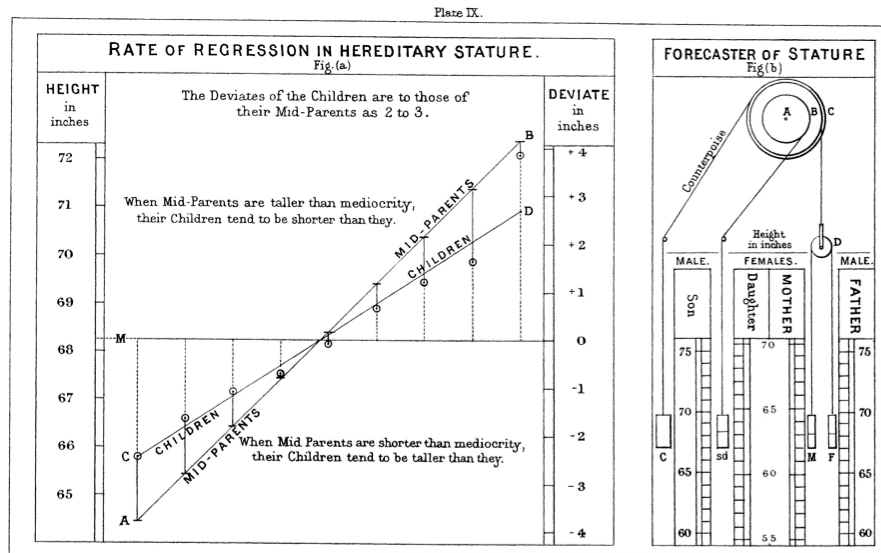
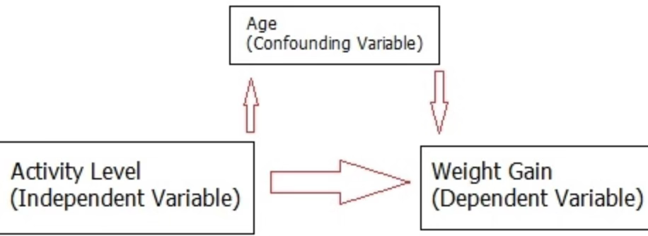
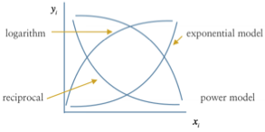
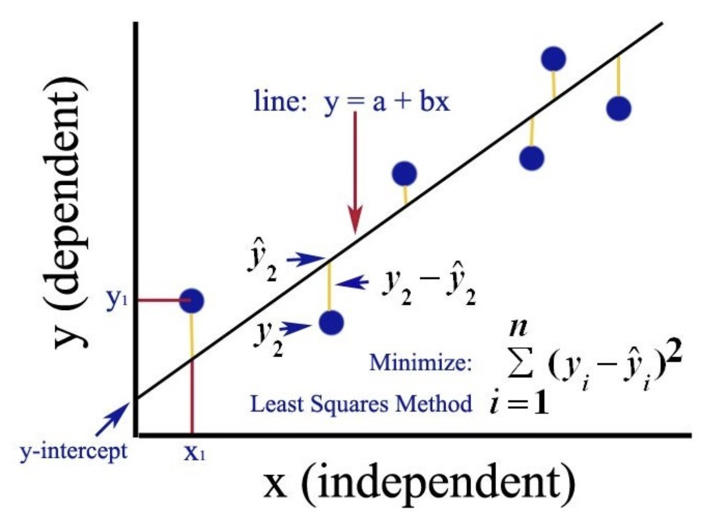
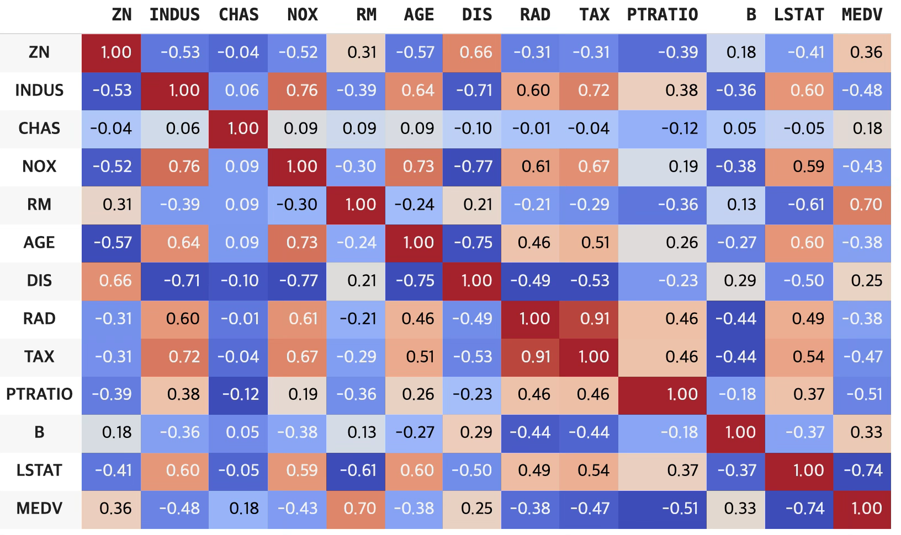
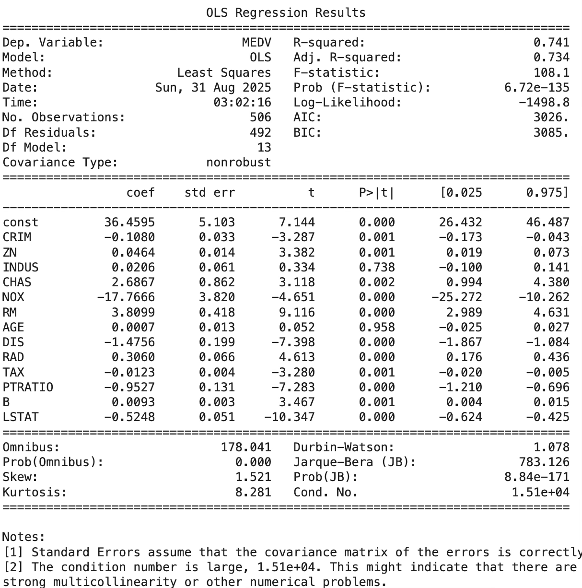

회귀분석 | 1. 개념&추정
1 회귀분석 개념
1.1 역사
영국의 통계학자이자 유전학자인 Francis Galton(1822-1911)은 식물 실험, 특히 완두콩(sweet pea) 씨앗 무게의 유전을 관찰하면서 “평균으로의 회귀(regression toward the mean)” 현상에 주목하였다.
큰 씨앗에서 나온 후대 씨앗은 크지만 부모만큼 극단적으로 크지 않고 평균에 더 가까워지는 경향을 보이며, 작은 씨앗에서 나온 후대 씨앗 역시 극단적으로 작지 않고 평균 쪽으로 이동하는 경향을 보인다.
Galton은 이러한 관찰을 인간의 키(height) 연구로 확장하였다. 부모 평균키를 다음과 같이 정의하였다.
\[\frac{FatherHeight + 1.08 \times MotherHeight}{2}\]
이는 어머니가 아버지보다 평균적으로 키가 작다는 점을 보정하기 위하여, 어머니 키에 1.08배 보정 계수를 곱한 것이다.
- 부모 키가 평균 수준에 가까운 경우, 자녀 키는 직선적 비례 관계를 보인다.
- 부모 키가 매우 크거나 작은 경우, 자녀 키는 부모만큼 극단적이지 않고 전체 평균 신장 쪽으로 더 가까워진다.
Galton은 이 현상을 회귀(regression)라고 명명하였다. 이는 원래 평균으로 되돌아가는 경향을 의미하며, 여기에서 오늘날의 회귀분석 용어가 비롯되었다.

1.2 회귀모형
함수관계: 측정형 변수들 사이의 함수적 관계에 관심을 갖는다. 상관분석은 변수들 간의 직선적 연관성을 파악하지만, 원인과 결과의 방향성을 고려하지 않는다. 반면, 회귀분석은 변수들 간의 관계를 설명할 때 방향성을 명확히 한다. 즉, 어떤 변수를 독립변수(independent variable, input)로 두어 결과에 영향을 주는 원인으로 간주하고, 이에 대응하는 결과 변수를 종속변수(dependent variable, output, 또는 목표변수 target variable)로 설정한다.
함수 형태 중 선형을 가장 선호: 회귀분석에서는 여러 함수 형태 중에서 선형 함수(linear function)를 가장 선호한다.
\[y = a + b_{1}X_{1} + b_{2}X_{2} + ... + b_{p}X_{p} + e\]
회귀계수는 함수의 기울기에 해당하므로, 예측변수가 한 단위 증가(또는 감소)할 때 목표변수가 얼마나 변화하는지를 직접적으로 해석할 수 있다. 비선형 함수 형태의 모형이라 하더라도, 적절한 변환을 통해 선형 함수로 변환할 수 있다.
- Cobb-Douglas 생산함수 \(Q = \alpha L^{\beta}L^{\lambda}u\) → 양변을 로그 변환하면 \(\ln(Q) = \ln(\alpha) + \beta \ln(L) + \lambda \ln(K) + \ln(u)\)
- 인구성장모형 \(P = \alpha e^{\beta T}u\) → 양변에 로그를 취하여 선형함수로 만들 수 있음 \(\ln(P) = \ln(\alpha) + \beta T + \ln(u)\)
목표변수(\(Y\))와 분포 가정: 회귀분석에서 목표변수(종속변수)는 하나이며, 원칙적으로 정규분포를 따르는 측정형 변수이다. 목표변수가 정규분포를 따르지 않는 경우에는 연결함수를 이용하여 종속변수를 정규분포로 변환한 후 선형 회귀모형을 적용한다.
- 예를 들어, 종속변수가 성공/실패와 같은 이분형 변수인 경우, 로짓 함수(logit function)를 연결함수로 사용한다.
- \(\text{logit}(p) = \ln\left( \frac{p}{1 - p} \right)\). 여기서 \(p = P(Y = 1)\)이며, Y는 성공(1) 또는 실패(0) 값을 갖는 이항 변수이다.
\[\ln\left( \frac{p}{1 - p} \right) = \beta_{0} + \beta_{1}X_{1} + \cdots + \beta_{k}X_{k}\]
회귀분석과 일반화 선형모형(GLM): 종속변수의 분포에 맞는 확률분포와 연결함수를 선택하여 선형모형의 틀을 확장한 것이 바로 일반화 선형모형(GLM, Generalized Linear Model)이다. 고전적 회귀분석은 GLM의 한 특별한 경우라 할 수 있으며, GLM은 회귀분석의 현대적 일반화라고 이해할 수 있다.
예측변수(\(X\)’s)는 다수이고 역시 측정형변수를 원칙으로 한다.: 예측변수가 하나인 경우를 단순회귀분석이라 하고, 두 개 이상인 경우를 다중회귀분석이라 한다. 회귀분석은 함수관계에 기반하므로, 범주형 변수는 직접 사용할 수 없고 지시변수(더미변수)로 변환하여 사용한다.
- 목표변수 \(Y\): 수능성적, 측정형 예측변수 \(X\): 일주일 공부시간, 더미변수 성별 \(D = 0\text{male},1\text{female}\)이라 하자.
- \(Y = a + b_{1}D + b_{2}X + b_{3}(X*D) + e\)
함수관계와 인과관계: 회귀분석은 변수들 사이의 함수적 관계를 밝히는 방법이지, 인과관계를 증명하는 방법은 아니다. 인과관계는 철저한 실험설계를 통해서만 확인할 수 있다.

회귀분석에서 중요한 개념은 교락(confounding)이다. 교락변수는 독립변수와 종속변수 모두에 영향을 주어, 두 변수 사이의 함수관계를 왜곡할 수 있다. 운동능력(X)과 체중 증가(Y)의 관계를 알고자 할 때, 연령(Z)이 X와 Y 모두에 영향을 주면 Z는 교락변수이다.
1.3 통제변수 매개변수 교락변수
생략변수편의란 실제로는 종속변수 Y에 영향을 주는 중요한 변수를 회귀모형에서 누락시킴으로써, 포함된 예측변수의 회귀계수가 편의(bias)를 가지게 되는 현상을 말한다.
1.3.1 통제변수 (control variable)
모형에 포함하여 원하지 않는 변동을 제거하거나 편의를 줄이기 위해 사용하는 변수이다.
- 교락변수(진짜 통제 대상): 편의를 없애려는 목적, \(Z \rightarrow X\)이고 \(Z \rightarrow Y\)이다.
- 정밀도 변수: Y에만 강하게 연관되어 분산을 줄이는 변수(교락은 아님), \(Z \rightarrow Y\)이고 \(Z \nrightarrow X\)이다.
모형: 시험점수 예측에서 “이전 학업성취도(중간고사 점수)”는 최종점수 Y의 변동을 설명하므로 정밀도를 높이는 통제변수이다.
- 통제 전: \(Y = \alpha_{0} + \alpha_{1}X + e\)
- 통제 후: \(Y = \beta_{0} + \beta_{1}X + \beta_{2}Z + u\)
여기서 \(\beta_{1}\)은 연령 Z를 동일하게 고정했을 때 운동능력 X의 효과로 해석된다.
1.3.2 매개변수 (mediator)
X가 Y에 영향을 미치는 경로 중간에 위치하는 변수이다. \(X \rightarrow M \rightarrow Y\) 구조이다. “효과가 어떻게 전달되는가?”를 설명한다.
운동량 X → “칼로리 소모” M → 체중변화 Y. 칼로리 소모는 매개이므로 총효과 추정에서는 포함하지 않는다.
직접효과 (Direct Effect) \(X \rightarrow Y\): M을 거치지 않고 바로 Y에 영향을 미치는 효과로 회귀식으로 표현하면, \(Y = \beta_{0} + \beta_{1}X + \beta_{2}M + u\), 여기서 \(\beta_{1}\)이 바로 직접효과이다.
간접효과 (Indirect Effect): \(X \rightarrow M \rightarrow Y\)경로를 따라 전달되는 효과이다.
- 매개변수 방정식: \(M = \alpha_{0} + \alpha_{1}X + v\)
- 종속변수 방정식: \(Y = \beta_{0} + \beta_{1}X + \beta_{2}M + u\)
- 간접효과: \(\alpha_{1} \times \beta_{2}\)
총효과 (Total Effect): 총효과 = 직접효과 + 간접효과 = \(\beta_{1} + (\alpha_{1} \times \beta_{2})\)
1.3.3 교락변수 (confounder)
X와 Y에 동시에 원인으로 작용하여 \(X \rightarrow Y\) 관계를 왜곡하는 변수이다. 교락을 통제하지 않으면 생략변수편의가 발생한다.
\(Z \rightarrow X,Z \rightarrow Y\), 또는 인과적으로 동등한 구조(공통원인).
모형: \(Y = \beta_{0} + \beta_{1}X + \beta_{2}Z + u,\quad E(u \mid X,Z) = 0\)
Z를 포함하면 백도어 경로가 차단되어 \(X \rightarrow Y\)의 순수한 조건부 평균 효과를 추정할 수 있다.
모형에서 Z를 생략한 기울기 편의: \(\text{Bias}({\widehat{\alpha}}_{1}) = \beta_{2} \cdot \frac{Cov(X,Z)}{Var(X)}\)
1.3.4 비교
콜라이더 collider: \(X \rightarrow C \leftarrow Z\), 여기서 \(C\)가 콜라이더다. 원래는 X와 Z가 독립일 수 있으나 C를 조건부로 통제(회귀모형에 포함, 표본을 C 값으로 제한)하면, X와 Z 사이에 가짜 상관이 생긴다. 이 현상을 콜라이더 편향 또는 선택편의라고 한다.
1.4 회귀분석 절차
1.4.1 모형 설정
첫 단계는 연구자가 관심을 두는 목표변수(종속변수)와 그것에 영향을 미칠 것으로 가정되는 예측변수(독립변수)를 명확히 설정하는 것이다. 이론적 근거와 선행연구를 바탕으로 “어떤 변수가 결과에 영향을 줄 것인가?”를 합리적으로 규정해야 한다.
1.4.2 데이터 전처리
자료를 확보한 후에는 산점도를 그려 변수 간의 기초적 관계를 탐색하고, 필요할 경우 자료를 변환한다. 또한 결측치 처리, 이상치 확인, 단위 일관성 확보 등의 기본 정제 작업도 이 단계에서 수행된다.
1.4.3 모형 추정
자료 준비가 완료되면 회귀모형을 실제로 적합한다. 가장 기본적인 방법은 최소제곱법(OLS, Ordinary Least Squares)으로, 이는 잔차제곱합 \(\sum(y_{i} - \widehat{y_{i}})^{2}\)을 최소화하는 방식이다.
1.4.4 유의 변수 선택
추정된 모형 내에서 회귀계수의 통계적 유의성 검정(t-검정 등)을 통해 목표변수에 유의미한 영향을 주는 변수를 식별한다. 필요할 경우 변수선택 기법(예: 단계적 회귀, LASSO 등)을 활용한다.
1.4.5 다중공선성 진단
예측변수들 사이에 지나치게 높은 상관관계가 존재하면, 회귀계수의 추정이 불안정해지고 해석이 왜곡될 수 있다. 이를 다중공선성(multicollinearity) 문제라고 한다. VIF(Variance Inflation Factor) 등 진단지표를 이용하여 다중공선성을 확인한다.
1.4.6 모형 진단 및 활용
적합된 모형이 회귀분석의 가정을 충족하는지 점검하는 것이다.
- 잔차 분석을 통해 선형성, 등분산성, 독립성, 정규성 가정을 확인한다.
- 이상치와 영향치를 식별하여 분석 결과에 과도한 영향을 주는 자료가 없는지 검토한다.
- 모형이 타당하다면, 각 변수의 효과 크기를 비교하여 중요도를 평가하고, 결과를 이용해 예측구간과 신뢰구간을 도출한다.
2 회귀모형
2.1 모형
\[Y_{i} = a + b_{1}X_{i1} + b_{2}X_{i2} + \ldots + b_{p}X_{ip} + e_{i}\]
\[\left\lbrack \begin{array}{r} y_{1} \\ y_{2} \\ ... \\ y_{n} \end{array} \right\rbrack = \begin{bmatrix} 1 & x_{11} & ... & x_{1p} \\ 1 & x_{21} & ... & x_{2p} \\ ... & & & \\ 1 & x_{n1} & ... & x_{np} \end{bmatrix}\left\lbrack \begin{array}{r} a \\ b_{1} \\ ... \\ b_{p} \end{array} \right\rbrack + \left\lbrack \begin{array}{r} e_{1} \\ e_{2} \\ ... \\ e_{n} \end{array} \right\rbrack \quad \Leftrightarrow \quad \underset{¯}{y} = X\underset{¯}{b} + \underset{¯}{e}\]
- 첨자 \(i\)는 표본 데이터를 구별을 위한 것으로 \(i = 1,2,...,n\)이고 \(n\)은 총 표본의 크기이다.
- \(Y\): 종속 dependent 변수, 반응 response 변수, 내생 endogenous 변수, 목표 target 변수 등으로 불리고 목표변수는 확률변수이다.
- \(X\)’s: 독립 independent 변수, 설명 explanatory 변수, 외생 exogenous 변수, 예측 predictor, feature 변수 등으로 불리고 예측변수는 결정변수로 확률변수가 아니므로 분포함수를 갖지 않으며 모형 내에서 결정된다.
- \(p\): 모형 내 고려되는 예측변수 개수
- \(\alpha\): 절편(intercept), 모든 예측변수 \(X\) 값들이 0일때 목표변수 \(Y\)의 값
- \(\beta_{k}\): 예측변수 \(X_{k}\)의 회귀계수 - 예측변수 \(X_{k}\)가 한 단위 증가할 때마다 목표변수 \(Y\)의 증가량(편미분 계수)
- \(e_{i}\): 오차항(백색잡음)으로 정규분포를 가정한다.
2.2 가정
2.2.1 선형성 linearity
회귀분석은 목표변수(종속변수)와 예측변수(독립변수) 사이의 관계가 직선 형태를 따른다고 가정한다.
\[E(Y \mid X_{1},X_{2},\ldots,X_{k}) = \beta_{0} + \beta_{1}X_{1} + \beta_{2}X_{2} + \cdots + \beta_{k}X_{k}\]
여기서 “선형”이란 회귀계수가 변수에 곱해져 더해지는 형태라는 뜻이지, 반드시 직선 그래프라는 의미만은 아니다. 예를 들면 \(X^{2}\)같은 항을 포함하면 변수 변환을 통해 곡선 관계도 선형회귀의 틀 안에서 다룰 수 있다.
전체 모형의 선형성 검정: 전체 회귀모형의 선형성은 분산분석 F-검정을 통해 확인한다.
- 귀무가설: 모든 회귀계수 \(\beta_{1} = \beta_{2} = \cdots = \beta_{k} = 0\)
- 대립가설: 적어도 하나의 회귀계수 \(\beta_{j} \neq 0\)이다.
선형성 위배 시 대처
- 변수 변환(log, 제곱근, Box-Cox 변환 등)
- 다항항 추가(\(X^{2},X^{3}\))
- 곡선이나 비선형 모형(예: 로지스틱 회귀, 지수 회귀)
- 스플라인 회귀(spline regression)와 같은 유연한 함수형
선형성 사전 진단도구: 산점도 행렬로 목표변수와 예측변수 간 개별 산점도를 그려 직선관계를 발견한다.

단순회귀모형에서의 선형변환: 단순회귀모형에서 목표변수 Y, 예측변수 X에 대한 선형변환, 즉 \(Y^{*} = a + bx^{*}(b \neq 0)\)를 취하더라도 모형의 구조는 그대로 유지된다. 단순히 회귀계수 \(\beta_0\), \(\beta_1\)의 값만 달라질 뿐, 변수 간의 선형성 자체는 변하지 않는다.
다중회귀모형에서의 선형변환 문제: 만약 Y에 대해 임의의 선형변환을 가하면, 특정 예측변수 \(X_j\)와의 선형성을 보정하려는 의도가 있더라도, 동시에 다른 예측변수들과의 함수관계까지 함께 변형되므로 전체 모형 해석이 왜곡된다. 따라서 다중모형에서는 목표변수보다는 예측변수의 변환(log, 제곱근, 다항항 추가 등)에 국한해야 한다.
\[Y = \beta_{0} + \beta_{1}X_{1} + \beta_{2}X_{2} + \cdots + \beta_{k}X_{k} + \varepsilon\]
2.2.2 오차 가정 \(\underset{¯}{e} \sim MNV(\underset{¯}{0},\sigma^{2}I)\)
회귀모형에서 오차항은 예측변수들에 의해 설명되지 않는 부분이다.
독립성(independent): 오차항은 서로 독립이어야 한다. 즉, 어떤 관측치의 오차가 다른 관측치의 오차에 영향을 주어서는 안 된다. 독립성 가정은 특히 시계열 자료(시간적 순서가 있는 데이터)에서 중요하다.
정규성(normality): 회귀분석에서 가장 중요한 오차항 가정 가운데 하나는 정규성이다. 오차항이 정규분포를 따른다고 가정하는 이유는 통계적 검정을 정당화하기 위함이다. 그러나 표본의 크기가 충분히 크면 중심극한정리(CLT)에 의해 큰 문제가 되지 않는 경우가 많다.
등분산성(Homoscedasticity): 등분산성은 모든 예측변수 값에서 오차항의 분산이 동일하다는 가정이다. 이 가정이 위배되면 표준오차 추정이 왜곡되고, 이를 이분산성(heteroscedasticity)이라고 한다.
2.3 수리적 접근 (상관계수 접근)
두 측정형 변수 \((X,Y)\)는 평균으로 \(\mu_{x},\mu_{y}\), 분산은 \(\sigma_{x}^{2},\sigma_{y}^{2}\)를 따르고 상관계수를 \(\rho\)을 가질 때, 조건부 기대값은 선형 함수로 표현된다.
\[m(x) = E(Y \mid X = x) = \mu_{y} + \rho\frac{\sigma_{y}}{\sigma_{x}}(x - \mu_{x}) = a + bx\]
여기서 절편 \(a = \mu_{y} - b\mu_{x}\)이고, 기울기는 \(b = \rho\frac{\sigma_{y}}{\sigma_{x}}\)이다.
다음의 조건부 분산은 X 값에 관계없이 일정하다.
\[v(x) = Var(Y \mid X = x) = \sigma_{y}^{2}(1 - \rho^{2})\]
따라서 상관계수 \(\rho\)는 단순한 상관의 크기를 넘어, 예측직선의 기울기 \(b\)를 결정하고, 설명된 변동과 설명되지 않은 변동의 비율까지 규정한다.
2.4 범주형 예측변수 처리
회귀분석은 기본적으로 측정형 변수를 전제로 한다. 따라서 범주형 변수는 그대로 사용할 수 없고, 수치형으로 변환해야 한다. 이때 가장 널리 쓰이는 방법이 더미변수(dummy), 지시변수(indicator) 변환이다.
더미변수의 정의: 범주형 변수가 k개의 수준(level)을 가질 때, 회귀모형에 직접 넣을 수 없으므로 k-1개의 이진(dummy) 변수를 만들어 사용한다. 예를 들어, 성별 변수가 남자/여자 두 수준이라면, 하나의 더미변수를 만들어
\[D = \begin{cases}1 & \text{male} \\ 0 & \text{female}\end{cases}\]
라고 정의한다.
기준범주(reference category): 범주형 변수의 한 수준은 기준범주로 남기고, 나머지 범주들을 더미변수로 만든다. 예를 들면 학력 변수가 “고졸, 대졸, 대학원졸” 3개 수준이라면:
- 기준범주: 고졸
- 더미1: 대졸(대졸이면 1, 아니면 0)
- 더미2: 대학원졸(대학원졸이면 1, 아니면 0)
\[Y = \beta_{0} + \beta_{1}D_{\text{대졸}} + \beta_{2}D_{\text{대학원}} + u\]
더미변수와 다른 연속형 변수의 상호작용항을 넣으면, 범주별로 기울기가 다른 모형을 추정할 수도 있다.
\[Y = \beta_{0} + \beta_{1}X + \beta_{2}D + \beta_{3}(X \times D) + u\]
\[D = 0: Y = \beta_{0} + \beta_{1}X + u, \quad D = 1: Y = \beta_{0} + \beta_{2} + (\beta_{1} + \beta_{3})X + u\]
빅데이터 환경에서의 선택 기준
- 데이터 수준이 10~20개 정도면 여전히 더미 변수가 적절.
- 수준 수백 이상: target encoding, hash encoding, frequency encoding 활용.
- 수천 이상: 해싱 + 임베딩 접근이 현실적.
- 해석이 목표라면 → 더미(희귀 수준 통합).
- 예측이 목표라면 → target encoding, 임베딩, 해싱이 유리.
3 회귀모형 추정
3.1 회귀계수 추정 OLS 방법
회귀분석에서 가장 중요한 절차는 주어진 데이터로부터 회귀계수(절편과 기울기)를 추정하는 것이다. 이때 사용되는 가장 기본적이고 널리 쓰이는 방법이 바로 최소자승법(OLS, Ordinary Least Squares)이다.
역사적으로 이 방법은 Karl Pearson(1857-1936)에 의해 체계적으로 제안되었다.

관측점들을 가장 대표하는 직선 (best fit)을 어떻게 구할 것인가? 데이터 \((x_{i},y_{i})\)를 활용하여 점들에 가장 적합한 직선의 회귀계수 \((a,b)\)를 추정하고 이를 이용하여 목표변수 추정값을 \({\widehat{y}}_{i} = \widehat{a} + \widehat{b}x_{i}\)(fitted value) 구한다.
\[\min_{a,b}\sum(e_{i})^{2} = \min_{a,b}\sum(y_{i} - {\widehat{y}}_{i})^{2}\]
왜 제곱인가? 잔차 \((y_{i} - {\widehat{y}}_{i})\)를 그대로 합하면 0이 되므로 오차 크기를 반영할 수 없다. 제곱은 항상 양수이고, 미분 가능하며, 오차가 클수록 더 큰 페널티를 주기 때문에 회귀분석에서 잔차 제곱합을 최소화하는 방법을 사용한다.
3.2 단순회귀모형 추정
모형: \(y_{i} = a + bx_{i} + e_{i},\quad e_{i} \sim N(0,\sigma^{2})\)
추정 방정식: \(\min_{a,b}\overset{n}{\sum_{i = 1}}e_{i}^{2} = \min_{a,b}\overset{n}{\sum_{i = 1}}(y_{i} - a - bx_{i})^{2}\)
OLS 추정치:
\[\widehat{b} = \frac{\sum(x_{i} - \overline{x})(y_{i} - \overline{y})}{\sum(x_{i} - \overline{x})^{2}}, \quad \widehat{a} = \overline{y} - \widehat{b}\overline{x}\]
최대우도추정량 Maximum Likelihood Estimator: \(y_{i} \sim iidN(a + bx_{i},\sigma^{2})\)이므로 우도함수 최대화 = OLS 추정과 동일하다.
\[L(a,b;x_{1},x_{2},...,x_{n}) = \left(\frac{1}{\sqrt{2\pi}\sigma}\right)^{n}\exp\left( - \frac{\sum(y_{i} - a - bx_{i})^{2}}{2\sigma^{2}}\right)\]
회귀계수에 대한 OLS 추정치는 BLUE(Best Linear Unbiased Estimator)이다.
잔차 = 오차의 추정량
- \(r_{i} = {\widehat{e}}_{i} = y_{i} - {\widehat{y}}_{i}\)
- \(\sum r_{i} = 0\): 잔차의 합은 0이다.
- \(\sum x_{i}r_{i} = 0\): 관측치 \(x_{i}\)을 가중치로 계산한 가중평균은 0이다.
- \(\sum{\widehat{y}}_{i}r_{i} = 0\): 예측치 \({\widehat{y}}_{i}\)을 가중치로 계산한 가중평균은 0이다.
- 적합된 회귀직선은 \((\overline{x},\overline{y})\)을 지난다.
3.3 다중회귀모형 추정
행렬모형: \(\underset{¯}{y} = X\underset{¯}{b} + \underset{¯}{e}\), (가정) \(\underset{¯}{e} \sim N(\underset{¯}{0},\sigma^{2}I_{n})\)
\[\min_{a,b_{1},b_{2},\ldots}\sum(e_{i})^{2} \quad \Rightarrow \quad \min_{\underset{¯}{b}} {\underset{¯}{e}}'\underset{¯}{e} = \min_{\underset{¯}{b}} (\underset{¯}{y} - X\underset{¯}{b})'(\underset{¯}{y} - X\underset{¯}{b})\]
\(Q\)를 최소화 하는 회귀계수(모수) \(\underset{¯}{b}\)를 찾기 위한 정규방정식(normal equation)을 정리하면:
\[\widehat{\underset{¯}{b}} = (X'X)^{- 1}(X'\underset{¯}{y})\]
OLS 추정치 성질: GAUSS-MARKOV Theorem: 회귀계수에 대한 OLS 추정치는 BLUE(Best Linear Unbiased Estimator)이다. 즉 모든 선형, 불편 추정량 중 최소 분산(minimum variance)를 갖는다.
OLS 평균과 (추정)분산
\[E(\widehat{\underset{¯}{b}}) = \underset{¯}{b}, \quad V(\widehat{\underset{¯}{b}}) = \sigma^{2}(X'X)^{- 1}, \quad \widehat{V(\widehat{\underset{¯}{b}})} = MSE(X'X)^{- 1}\]
적합치 \({\widehat{y}}_{i}\)
\[\widehat{\underset{¯}{y}} = X\widehat{\underset{¯}{b}} = X(X'X)^{- 1}X'\underset{¯}{y} = H\underset{¯}{y}\]
Hat 행렬 \(H = X(X'X)^{- 1}X'\)
- H 행렬은 대칭행렬(\(H' = H\))이며 멱등행렬(\(HH = H\))이다.
- 행렬 \((I - H)\)도 대칭행렬이며 멱등행렬이다.
잔차 residual \(r_{i} = y_{i} - {\widehat{y}}_{i}\)
\[\underset{¯}{r} = \underset{¯}{y} - \widehat{\underset{¯}{y}} = (I - H)\underset{¯}{y}\]
- 잔차 분산: \(V(\underset{¯}{r}) = \sigma^{2}(I - H)\)
3.4 회귀모형 검정
3.4.1 분산분석적 접근
목표변수의 분산(총변동)을 모형이 설명변동과 설명하지 못하는 오차변동으로 이분화하고 설명변동이 오차변동에 비해 충분히 크다면 회귀모형이 적절하다고(유의하다고) 판단한다.
- 귀무가설: 모든 회귀계수는 유의하지 않다. \((b_{1}, b_{2}, \ldots, b_{p})' = (0, 0, \ldots, 0)'\)
- 대립가설: 적어도 하나의 회귀계수는 유의하다. 적어도 \(b_{k} \neq 0\)이다.
3.4.2 변동분할
총변동 Total Sum of Square
\[SST = \sum(y_{i} - \overline{y})^{2} = (\underset{¯}{y} - \overline{y}1)'(\underset{¯}{y} - \overline{y}1) = {\underset{¯}{y}}'M\underset{¯}{y}\]
여기서 \(M = I - \frac{1}{n}11' = I - \frac{1}{n}J\)
모형변동 Regression (Model) SS
\[SSR = \sum({\widehat{y}}_{i} - \overline{y})^{2} = {\underset{¯}{y}}'(H - (1/n)J)\underset{¯}{y}\]
오차변동 Error SS
\[SSE = \sum(y_{i} - {\widehat{y}}_{i})^{2} = {\underset{¯}{y}}'(I - H)\underset{¯}{y}\]
3.4.3 이차형식
【정의】 확률변수 벡터 \(\underset{¯}{y}\), 상수행렬 \(A\)에 대하여 \(\underset{¯}{y}'A\underset{¯}{y}\)을 이차형식이라 한다.
【이차형식 분포 정리】 만약 \(\underset{¯}{y} \sim MVN(\underset{¯}{\mu} = \underset{¯}{0},\Sigma = I)\)라면, 이차형식 \(Q = \underset{¯}{y}'A\underset{¯}{y}\)은 자유도가 \(rank(A)\)인 \(\chi^{2}\)분포를 따른다.
3.4.4 변동분포
총변동 분포 \(SST \sim \chi^{2}(n - 1)\)
- 오차항의 정규성 가정에 의하여 \(\underset{¯}{y} \sim MVN(X\underset{¯}{b},\sigma^{2}I)\) 정규분포를 따르므로 이차형식인 \(SST\)는 자유도 \(rank(I - J/n) = n - 1\)인 \(\chi^{2}\)분포를 따른다.
오차변동 분포 \(SSE \sim \chi^{2}(n - p - 1)\)
- 이차형식인 \(SSE\)는 자유도 \(rank(I - H) = n - p - 1\)인 \(\chi^{2}\)분포를 따른다.
자유도 분할: Cochran 정리
- 총변동의 자유도는 평균이 추정되었으므로 \((n - 1)\)이다.
- \(SSE\)의 자유도는 \((n - p - 1)\)인 \(\chi^{2}\)분포를 따른다.
- \(SST \sim \chi^{2}(n - 1)\)는 서로 독립인 \(SSE \sim \chi^{2}(n - p - 1)\)와 \(SSR\)로 나뉘고, Cochran 정리에 의해 \(SSR \sim \chi^{2}(p)\)이다.
3.4.5 평균변동 및 기대평균변동 Expected MSE
평균오차변동
\[MSE = \frac{SSE}{n - p - 1}, \quad E(MSE) = \sigma^{2}\]
평균회귀변동
\[MSR = \frac{SSR}{p}, \quad E(MSR) = \sigma^{2} + b^{2}\sum(x_{i} - \overline{x})^{2} \text{ (단순회귀 경우)}\]
3.4.6 분산분석표, F-검정: 설정 회귀모형 유의성 검정
- 귀무가설: 설정한 회귀모형은 유의하지 않다. ⟺ 모든 예측변수의 회귀계수 값은 0이다.
- 대립가설: 설정한 회귀모형은 유의하다. ⟺ 회귀계수 벡터 \(\underset{¯}{b}\) 중 유의한 회귀계수가 적어도 하나가 있다.
- 검정통계량: \(TS = \frac{MSR}{MSE} \sim F(p,n - p - 1)\)
| 변동(source) | 자승합 (Sum of Squares) | 자유도 (Df) | 평균자승합 (Mean SS) | F-통계량 |
|---|---|---|---|---|
| 회귀변동 | \(SSR = {\underset{¯}{y}}'(H - (1/n)J)\underset{¯}{y}\) | \(p\) | \(MSR = \frac{SSR}{p}\) | \(TS = \frac{MSR}{MSE} \sim F(p,n-p-1)\) |
| 오차변동 | \(SSE = {\underset{¯}{y}}'(I - H)\underset{¯}{y}\) | \(n-p-1\) | \(MSE = \frac{SSE}{n-p-1}\) | |
| 총변동 | \(SST = {\underset{¯}{y}}'(I - (1/n)J)\underset{¯}{y}\) | \(n-1\) |
그러므로 F-검정 결과 귀무가설이 기각되면 유의한 설명 변수가 하나 이상 있다는 것이므로 각 설명 변수에 대한 유의성을 t-검정을 이용하여 알아보면 된다.
3.4.7 t-검정: 개별 예측변수 유의성 검정 \(H_{0}:b_{k} = 0\)
- 귀무가설: 예측변수 \(X_{k}\)는 유의하지 않다. \(H_{0}:b_{k} = 0\)
- 대립가설: 예측변수 \(X_{k}\)는 유의하다. \(H_{0}:b_{k} \neq 0\)
- 검정통계량: \(TS = \frac{{\widehat{b}}_{k}}{s({\widehat{b}}_{k})} \sim t(n - p - 1)\)
두 개 이상 예측변수의 유의성 동시 검정: 검정통계량 \(H_{0}:b_{j} = 0,\text{ for } j = 1,2,...,k\)
\[TS = \frac{(SSR_{F} - SSR_{R})/k}{MSE_{F}} \sim F(k,n - p - 1)\]
\(k\) = 귀무가설에서 설정된 회귀계수 0인 예측변수 개수이다.
Sequential 순차 자승합 SS, Type I: 회귀모형 삽입 예측모형 순서대로 자승합이 출력된다.
- \(X_{1}\): \(SSR(X_{1}|\mu)\)
- \(X_{2}\): \(SSR(X_{2}|X_{1},\mu)\)
- \(X_{p}\): \(SSR(X_{p}|X_{1},X_{2},...,X_{p - 1},\mu)\)
- 통제변수 모형에 주로 사용된다.
Type II: hierarchical or partially sequential 부분 자승합: 다른 모든 예측변수가 고정인 경우 해당 변수의 변동이다.
\[SSR(X_{k}|X_{1},...,X_{k - 1},X_{k + 1},...,X_{p},\mu)\]
유의 변수 선택에 사용된다.
Type III: marginal or orthogonal, partial: 타입 2 자승합과 동일하다. 부분자승합 개념이나 교차항이 있는 경우 상이하다.
4 사례 데이터
보스턴 주택가격
# Boston Housing 데이터 불러오기 및 회귀분석 사례
import pandas as pd
import statsmodels.api as sm
from sklearn.datasets import fetch_openml
# 1. 데이터 불러오기 (OpenML에서 Boston Housing)
boston = fetch_openml(name="boston", version=1, as_frame=True)
df = boston.frame
df.info()CRIM: per capita crime rate by town → 타운별 1인당 범죄율.
ZN: proportion of residential land zoned for lots over 25,000 sq.ft. → 25,000 제곱피트(약 695평) 이상의 부지로 구획된 주거용 토지 비율.
INDUS: proportion of non-retail business acres per town → 타운별 비소매(non-retail) 상업용 토지 비율.
CHAS: Charles River dummy variable (= 1 if tract bounds river; 0 otherwise) → Charles River 더미 변수, 강을 경계로 하면 1, 아니면 0.
NOX: nitric oxides concentration (parts per 10 million, ppm × 10) → 산화질소(NOₓ) 농도, 단위: 10ppm.
RM: average number of rooms per dwelling → 주택당 평균 방의 수.
AGE: proportion of owner-occupied units built prior to 1940 → 1940년 이전에 건축된 자가 주택 비율.
DIS: weighted distances to five Boston employment centres → 보스턴 고용 중심지 5곳까지의 가중 평균 거리.
RAD: index of accessibility to radial highways → 방사형(radial) 고속도로 접근성 지수.
TAX: full-value property-tax rate per $10,000 → $10,000당 재산세율.
PTRATIO: pupil-teacher ratio by town → 타운별 학생-교사 비율.
B: 1000(Bk − 0.63)², where Bk is the proportion of Black residents by town → 인종 관련 변수.
LSTAT: % lower status of the population → 저소득·사회적 지위가 낮은 계층의 비율(%).
MEDV: median value of owner-occupied homes in $1000s → 자가 주택의 중앙값 가격 (단위: $1000).
산점도 행렬: 2개의 측정형 변수 데이터\((x_{i},y_{i})\)를 2차원 공간에 표현하여 두 변수의 함수 관계를 시각적으로 예상한다.
- X-축: 결정(원인) 요인으로 예측변수, 독립변수, 설명변수 등을 불리는 변수를 사용한다.
- Y-축: 결과로 목표변수, 종속변수, 반응변수로 불리는 변수를 사용한다.
진단내용(1) 함수관계: 산점도는 두 변수 간의 함수 관계를 본다. 두 변수의 함수 관계는 수집된 데이터 범위 내에서만 해석이 가능하다.
진단내용(2) 이상치
- (진단) 오차의 추정치인 (표준화) 잔차가 \(\pm 2\) 값을 벗어나면 이를 이상치로 진단한다.
- (해결) 고전적 통계분석에서는 이상치는 삭제하는 것을 원칙으로 한다. 그러나 대용량 데이터에서 이상치는 정상적인 패턴을 벗어나는 관측치여서 향후 시스템 개발에 주요한 정보를 제공하게 된다.
진단내용(3) 영향치: X-축(예측변수) 데이터의 범위를 벗어난 관측치를 영향치(influential observation)라 한다.
- 순수 영향치: 회귀 직선 추정식 상에 있어 함수관계(기울기 변동)에는 영향을 주지 않으나 결정계수 높여 예측변수의 설명 능력을 과다하게 높은 것으로 판단하게 하는 결과를 왜곡한다.
- 이상 영향치: 추정 회귀 직선을 벗어난 관측치로 이상치 개념이다.
- (진단) 예측모형 잔차분석의 Hat 통계량(Leverage 값)을 활용하여 판단한다.
#산점도 행렬 그리기
import seaborn as sns
import matplotlib.pyplot as plt
sns.pairplot(boston.iloc[:,1:15],kind='reg',diag_kind='kde')
plt.show()MEDV 목표변수(제일 마지막 대각 KDE - 커널추정 확률밀도함수)의 분포는 좌우 대칭을 보이므로 정규변환 필요는 없어 보인다.

추정: 이진형변수 chas가 (1=주변지역, 0=아닌 지역)으로 입력되어 있어 그대로 사용해도 되지만 만약 문자로 입력되었다면 (1,0)으로 변환하여 추정해야 한다.
pd.get_dummies(boston['chas'],drop_first=True)
#Using Pearson Correlation
df_cor=df.iloc[:,1:15].corr(method ='pearson')
# 스타일 지정: 소숫점 2자리 + 색상맵
df_cor.style.format("{:.2f}").background_gradient(cmap='coolwarm')
종속변수와 상관관계(상관계수 크기)가 가장 높은 예측변수는 lstat(-0.74) > rm(0.695) > ptratio(0.51) 순이다.
import pandas as pd
import statsmodels.api as sm
# 1) 종속/설명변수 분리
y = pd.to_numeric(df['MEDV'], errors='coerce')
X = df.drop(columns=['MEDV']).copy()
# 2) 설명변수 전부 숫자형으로 강제 변환
for col in X.columns:
if X[col].dtype.name in ['category', 'object']:
X[col] = pd.to_numeric(X[col], errors='coerce')
else:
X[col] = X[col].astype(float)
# 3) 결측치 제거
mask = y.notna() & X.notna().all(axis=1)
y = y[mask]
X = X[mask]
# 4) 절편 추가 후 적합
X = sm.add_constant(X, has_constant='add')
fit = sm.OLS(y, X).fit()
print(fit.summary())